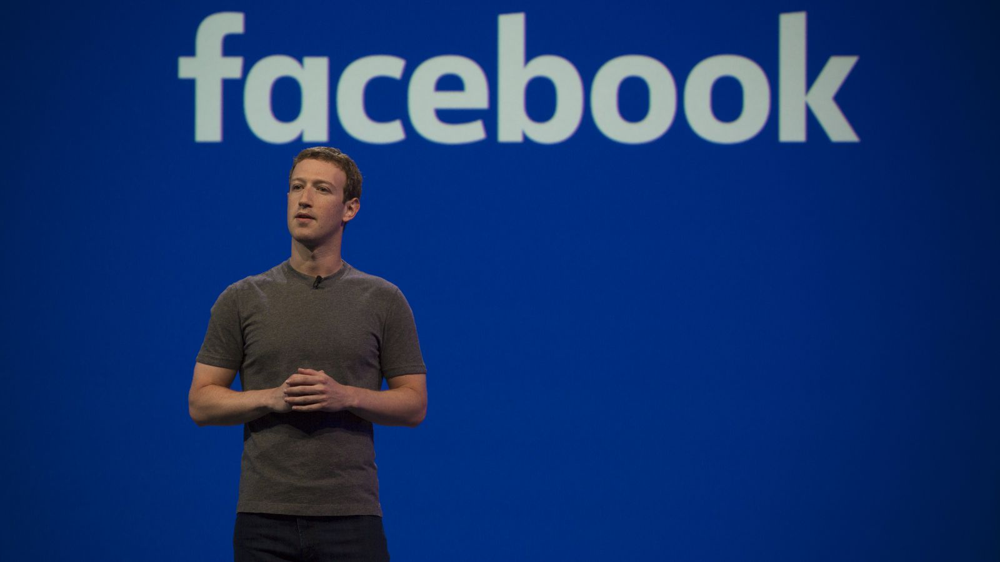

Sptember 11th,2001
About

Mark Elliot Zuckerberg (/ˈzʌkərbɜːrɡ/; born May 14, 1984) is an American technology entrepreneur and philanthropist. He is known for co-founding and leading Facebook as its chairman and chief executive officer.
Born in White Plains, New York, Zuckerberg attended Harvard University, where he launched Facebook from his dormitory room on February 4, 2004, with college roommates Eduardo Saverin, Andrew McCollum, Dustin Moskovitz, and Chris Hughes. Originally launched to select college campuses, the site expanded rapidly and eventually beyond colleges, reaching one billion users by 2012. Zuckerberg took the company public in May 2012 with majority shares. His net worth is estimated to be US$55.0 billion as of November 30, 2018, declining over the last year with Facebook stock as a whole.
Since 2010, Time magazine has named Zuckerberg among the 100 wealthiest and most influential people in the world as a part of its Person of the Year award. In December 2016, Zuckerberg was ranked 10th on Forbes list of The World's Most Powerful People.
On February 4, 2004, Zuckerberg launched Facebook from his Harvard dormitory room. An earlier inspiration for Facebook may have come from Phillips Exeter Academy, the prep school from which Zuckerberg graduated in 2002. It published its own student directory, "The Photo Address Book", which students referred to as "The Facebook". Such photo directories were an important part of the student social experience at many private schools. With them, students were able to list attributes such as their class years, their friends, and their telephone numbers.
Once at college, Zuckerberg's Facebook started off as just a "Harvard thing" until Zuckerberg decided to spread it to other schools, enlisting the help of roommate Dustin Moskovitz. They began with Columbia University, New York University, Stanford, Dartmouth, Cornell, University of Pennsylvania, Brown, and Yale. Samyr Laine, a triple jumper representing Haiti at the 2012 Summer Olympics, shared a room with Zuckerberg during Facebook's founding. "Mark was clearly on to great things," said Laine, who was Facebook's fourteenth user.
Zuckerberg, Moskovitz and some friends moved to Palo Alto, California in Silicon Valley where they leased a small house that served as an office. Over the summer, Zuckerberg met Peter Thiel, who invested in the company. They got their first office in mid-2004. According to Zuckerberg, the group planned to return to Harvard, but eventually decided to remain in California. They had already turned down offers by major corporations to buy the company. In an interview in 2007, Zuckerberg explained his reasoning: "It's not because of the amount of money. For me and my colleagues, the most important thing is that we create an open information flow for people. Having media corporations owned by conglomerates is just not an attractive idea to me."
He restated these goals to Wired magazine in 2010: "The thing I really care about is the mission, making the world open."Earlier, in April 2009, Zuckerberg sought the advice of former Netscape CFO Peter Currie about financing strategies for Facebook. On July 21, 2010, Zuckerberg reported that the company reached the 500 million-user mark. When asked whether Facebook could earn more income from advertising as a result of its phenomenal growth, he explained:
I guess we could ... If you look at how much of our page is taken up with ads compared to the average search query. The average for us is a little less than 10 percent of the pages and the average for search is about 20 percent taken up with ads ... That's the simplest thing we could do. But we aren't like that. We make enough money. Right, I mean, we are keeping things running; we are growing at the rate we want to.
In 2010, Steven Levy, who wrote the 1984 book Hackers: Heroes of the Computer Revolution, wrote that Zuckerberg "clearly thinks of himself as a hacker". Zuckerberg said that "it's OK to break things" "to make them better". Facebook instituted "hackathons" held every six to eight weeks where participants would have one night to conceive of and complete a project. The company provided music, food, and beer at the hackathons, and many Facebook staff members, including Zuckerberg, regularly attended. "The idea is that you can build something really good in a night", Zuckerberg told Levy. "And that's part of the personality of Facebook now ... It's definitely very core to my personality."
Vanity Fair magazine named Zuckerberg number 1 on its 2010 list of the Top 100 "most influential people of the Information Age". Zuckerberg ranked number 23 on the Vanity Fair 100 list in 2009. In 2010, Zuckerberg was chosen as number 16 in New Statesman's annual survey of the world's 50 most influential figures.
In a 2011 interview with PBS shortly after the death of Steve Jobs, Zuckerberg said that Jobs had advised him on how to create a management team at Facebook that was "focused on building as high quality and good things as you are".
On October 1, 2012, Zuckerberg visited Russian Prime Minister Dmitry Medvedev in Moscow to stimulate social media innovation in Russia and to boost Facebook's position in the Russian market. Russia's communications minister tweeted that Prime Minister Dmitry Medvedev urged the social media giant's founder to abandon plans to lure away Russian programmers and instead consider opening a research center in Moscow. In 2012, Facebook had roughly 9 million users in Russia, while domestic clone VK had around 34 million. Rebecca Van Dyck, Facebook's head of consumer marketing, claimed that 85 million American Facebook users were exposed to the first day of the Home promotional campaign on April 6, 2013.
On August 19, 2013, The Washington Post reported that Zuckerberg's Facebook profile was hacked by an unemployed web developer.
At the 2013 TechCrunch Disrupt conference, held in September, Zuckerberg stated that he is working towards registering the 5 billion humans who were not connected to the Internet as of the conference on Facebook. Zuckerberg then explained that this is intertwined with the aim of the Internet.org project, whereby Facebook, with the support of other technology companies, seeks to increase the number of people connected to the internet.
Zuckerberg was the keynote speaker at the 2014 Mobile World Congress (MWC), held in Barcelona, Spain, in March 2014, which was attended by 75,000 delegates. Various media sources highlighted the connection between Facebook's focus on mobile technology and Zuckerberg's speech, claiming that mobile represents the future of the company. Zuckerberg's speech expands upon the goal that he raised at the TechCrunch conference in September 2013, whereby he is working towards expanding Internet coverage into developing countries.
Alongside other American technology figures like Jeff Bezos and Tim Cook, Zuckerberg hosted visiting Chinese politician Lu Wei, known as the "Internet czar" for his influence in the enforcement of China's online policy, at Facebook's headquarters on December 8, 2014. The meeting occurred after Zuckerberg participated in a Q&A session at Tsinghua University in Beijing, China, on October 23, 2014, where he attempted to converse in Mandarin Chinese; although Facebook is banned in China, Zuckerberg is highly regarded among the people and was at the university to help fuel the nation's burgeoning entrepreneur sector.
Zuckerberg fielded questions during a live Q&A session at the company's headquarters in Menlo Park on December 11, 2014. The founder and CEO explained that he does not believe Facebook is a waste of time, because it facilitates social engagement, and participating in a public session was so that he could "learn how to better serve the community".
Zuckerberg receives a one-dollar salary as CEO of Facebook In June 2016, Business Insider named Zuckerberg one of the "Top 10 Business Visionaries Creating Value for the World" along with Elon Musk and Sal Khan, due to the fact that he and his wife "pledged to give away 99% of their wealth — which is estimated at $55.0 billion."